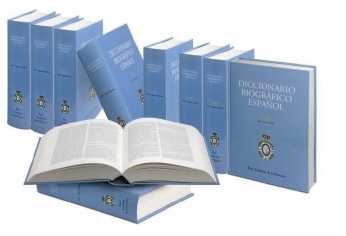

Colaboraciones en otras monografías
Libro:
Diccionario Biográfico Español. 50 volúmenes. Real Academia de Historia, 2012.Colaboración:
Biografía del académico de número de la Real Academia de Jusrisprudencia y Legislación, D. Victor Fairén Guillén.
La vieja aspiración de la Academia en lo correspondiente a los que en el siglo XVIII llamaban "varones ilustres", se concreta ahora en el Diccionario biográfico hispano. El 21 de julio de 1999 la Real Academia de la Historia firmó un convenio con el Ministerio de Educación, Cultura y Deporte con objeto de formar el Diccionario, en un plazo de ocho años. El proyecto está patrocinado por S. M. el Rey don Juan Carlos I. Para fijar los criterios de colaboración de las academias iberoamericanas de la Historia, en los días 8 y 9 de junio del año 2000 se celebraron en Madrid las Jornadas del Diccionario biográfico. Participaron los presidentes y directores de las distintas academias, españolas e iberoamericanas, y todos los colaboradores académicos, numerarios y correspondientes.
El Diccionario incluirá unas cuarenta mil biografías de personajes destacados en en todos los ámbitos del desarrollo humano y en todas las épocas de la historia hispana, desde la antigüedad más remota en que se tiene constancia de personajes hasta la actualidad, comprendiendo los territorios de ultramar y los transpirenaicos que formaron lo que suele denominarse "Monarquía Hispánica".
Bajo la supervisión de las comisiones de académicos -coordinadas por el académico Quintín Aldea-, se seleccionan los personajes, se clasifican, se decide el autor más calificado, se asesora bibliográficamente al equipo de trabajo y se revisan los trabajos finales. La informatización del proyecto permite codificar en soporte electrónico todos los materiales. Para el correo y la conexión a internet se utiliza un sistema de ondas hertzianas, con capacidad doble de las mayores existentes. La Real Academia de la Historia dispone, pues, de colaboradores calificados, de los medios materiales necesarios y de la técnica adecuada para el éxito de un proyecto que significará un notabilísimo avance para la "sociedad del conocimiento".
Libro:
Estudios acerca de la Justicia en España. 2 volúmenes. Coordinador M. Alonso Olea. Ministerio de Justicia, 2004.Colaboración:
Capítulo: El Procurador en el nuevo ordenamiento jurídico español”. p.227 – 248